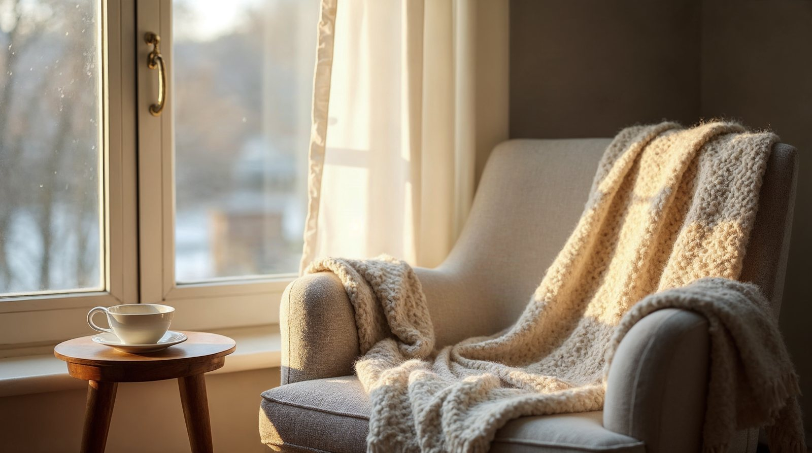
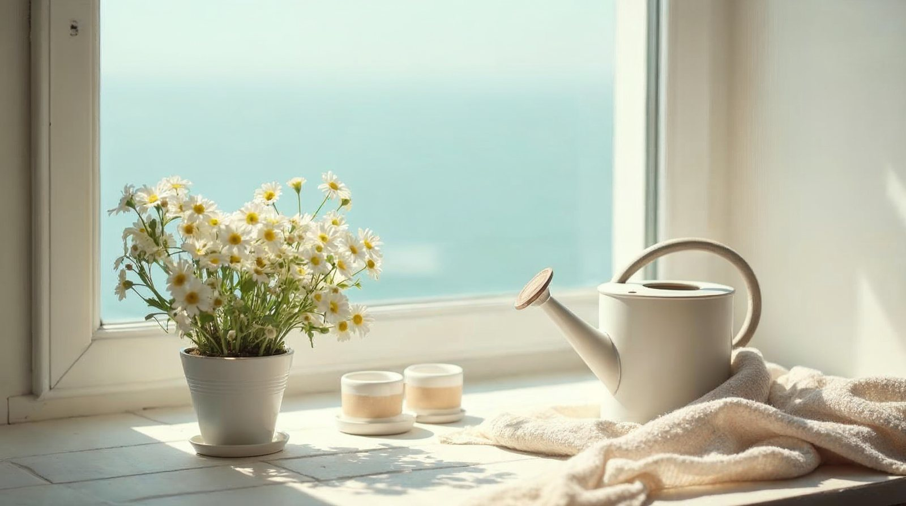
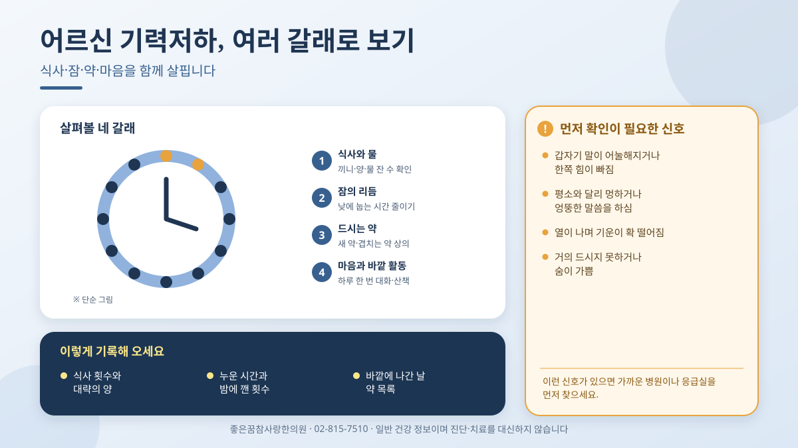

이종호 한의사 감수좋은꿈참사랑한의원 대표원장 (한의사 면허번호 19769)발행 2026-11-26 · 수정 2026-11-26
이 글의 차례
주말에 부모님 댁에 들렀더니 낮인데도 안방에 누워 계십니다. "왜 누워 계세요?" 하고 여쭈면 "그냥, 기운이 없어서" 하십니다. 예전에는 시장도 혼자 다녀오시고 화분도 손수 돌보셨는데, 요즘은 현관 밖으로 나가시는 날이 손에 꼽힙니다.
진료실에서는 어르신 본인보다 자녀분이 먼저 이런 이야기를 꺼내시는 경우가 많습니다. "어디가 특별히 아프신 건 아닌데, 자꾸 누워만 계세요." 걱정은 되는데 어디서부터 봐야 할지 몰라 막막하다고 하십니다.
연세가 드시면 기운이 예전 같지 않은 것은 자연스러운 일입니다. 하지만 '나이 탓'으로만 넘기기에는, 그 뒤에 살펴볼 이유가 숨어 있는 경우가 적지 않습니다. 식사량이 줄었거나, 밤잠이 얕아졌거나, 새로 드시는 약이 있거나, 마음이 가라앉아 있을 수 있습니다.
그래서 저는 어르신의 기력저하를 '하나의 증상'이 아니라 '여러 갈래의 신호가 모인 모습'으로 봅니다. 이 글에서는 그 갈래를 하나씩 풀어 보고, 가족이 집에서 무엇을 보면 좋은지, 한의원에서는 무엇을 함께 살피는지 말씀드리겠습니다.
단순한 노화와 살펴볼 기력저하는 어떻게 다른가요
나이가 들며 생기는 변화는 대개 몇 년에 걸쳐 천천히 옵니다. 예전보다 조금 덜 걷고, 낮잠이 한 번 늘고, 무리하면 회복이 늦어지는 정도입니다. 그래도 하고 싶은 일은 하시고, 식사와 대화는 크게 달라지지 않습니다.
살펴볼 기력저하는 결이 다릅니다. 몇 주에서 몇 달 사이에 눈에 띄게 달라졌거나, 좋아하시던 일에 손을 놓으셨거나, 식사량과 체중이 함께 줄었거나, 대화가 줄고 표정이 어두워졌다면 '나이 탓'보다 다른 이유를 먼저 찾아보는 것이 좋습니다.
가족이 보기에 '예전의 우리 엄마, 아버지와 달라졌다'는 느낌은 꽤 정확한 신호입니다. 검사 숫자보다 그 느낌이 먼저 오는 경우가 많으니, 그냥 넘기지 마시고 언제부터 무엇이 달라졌는지 적어 두세요.
왜 어르신은 기운이 쉽게 떨어질까요
첫째는 식사입니다. 입맛이 줄고 씹기가 불편해지면 밥과 국 위주로 적게 드시게 되고, 단백질과 열량이 부족해집니다. 물도 덜 드셔서 몸이 마른 상태로 지내시는 분이 많습니다. 몸에 넣는 것이 줄면 기운도 따라 줄어듭니다.
둘째는 잠입니다. 연세가 드시면 잠이 얕아지고 새벽에 일찍 깨며, 밤에 화장실 때문에 여러 번 일어나시는 경우가 많습니다. 밤잠이 부족하면 낮에 눕게 되고, 낮에 누워 있으면 다시 밤잠이 얕아지는 흐름이 이어집니다.
셋째는 약입니다. 여러 병원에서 약을 받다 보면 드시는 약이 늘어나는데, 그 가운데 졸림이나 어지럼, 기운 빠짐을 만드는 약이 섞여 있을 수 있습니다. 새 약을 시작한 무렵부터 기운이 떨어졌다면 처방한 선생님께 꼭 말씀해 주세요.
넷째는 마음입니다. 배우자나 친구를 떠나보낸 뒤, 은퇴나 이사 뒤, 몸이 예전 같지 않다는 서운함 속에서 기분이 가라앉으면 몸도 함께 무거워집니다. 어르신의 우울은 슬프다는 말보다 '기운이 없다', '만사가 귀찮다'는 말로 나타나는 경우가 많습니다.
그 밖에 빈혈, 갑상선 기능 저하, 당뇨나 콩팥 기능의 변화, 숨은 감염처럼 검사로 확인해야 하는 이유도 있습니다. 그래서 기력저하가 몇 주 이상 이어지면 내과에서 기본 혈액 검사를 한 번 받아 보시길 권합니다.
가족이 집에서 살펴볼 것
아래 항목을 지난 한 달과 그 이전을 비교하며 짚어 보세요.
- 하루 세 끼를 드시는지, 한 끼 양이 얼마나 되는지
- 물이나 차를 하루 몇 잔 드시는지
- 낮에 누워 계시는 시간이 늘었는지
- 바깥에 나가시는 날이 일주일에 며칠인지
- 좋아하시던 텔레비전 프로그램이나 취미에 관심을 보이시는지
- 같은 이야기를 반복하시거나 날짜를 자주 헷갈리시는지
- 바지나 허리띠가 헐렁해졌는지
마지막 두 항목은 특히 눈여겨보세요. 기억이나 판단이 흐려지는 변화가 기운 저하와 함께 오기도 하고, 체중이 줄고 있다면 식사와 함께 다른 원인을 확인할 필요가 있습니다.
물과 대소변도 함께 봅니다
연세가 드시면 목마름을 덜 느끼셔서, 하루 종일 물 몇 모금만 드시는 경우가 많습니다. 밤에 화장실에 가기 싫어 일부러 물을 줄이시는 분도 계십니다. 몸이 마른 상태가 이어지면 기운이 떨어지고, 어지럽고, 변비가 생기기 쉽습니다.
물은 한 번에 많이 드시기보다 아침, 오전, 점심, 오후에 컵 하나씩 나눠 드시는 것이 좋습니다. 국이나 과일, 보리차처럼 식사와 함께 드시는 물도 도움이 됩니다. 심장이나 콩팥 때문에 물 양을 조절하라는 말씀을 들으셨다면 그 안내를 따라 주세요.
대변을 며칠씩 못 보시면 배가 더부룩해 입맛이 줄고, 입맛이 줄면 기운이 다시 떨어집니다. 소변 색이 진하거나 양이 눈에 띄게 줄었다면 물이 부족하다는 신호일 수 있습니다. 진료실에서 대소변을 꼭 여쭙는 이유입니다.

겨울과 여름에 달라지는 기운
겨울에는 추위 때문에 바깥 활동이 줄고 햇볕을 쬐는 시간이 짧아집니다. 낮에 집 안에만 계시면 밤잠이 얕아지고, 몸이 움츠러들어 어깨와 허리가 뻐근해집니다. 따뜻한 낮 시간에 잠깐이라도 바깥에 나가 햇볕을 쬐시길 권합니다.
여름에는 땀으로 물과 기운이 함께 빠져나갑니다. 입맛이 떨어져 찬 음식으로 끼니를 대신하시기 쉬운데, 이렇게 되면 속이 더 냉해지고 기운이 처집니다. 미지근한 물을 나눠 드시고, 더운 한낮보다 아침저녁 선선할 때 움직이시는 것이 좋습니다.
가족이 말을 건네는 방법
"왜 자꾸 누워 계세요"라는 말은 걱정에서 나오지만, 듣는 어르신께는 꾸중처럼 들리기도 합니다. "오늘 날씨가 좋은데 잠깐 같이 걸을까요", "점심 같이 먹어요"처럼 함께하자는 말이 몸을 일으키는 데 더 힘이 됩니다.
멀리 사는 가족이라면 정해진 시간에 짧게라도 전화를 드려 보세요. 무엇을 드셨는지, 밖에 나가셨는지를 자연스럽게 여쭈다 보면 변화를 일찍 알아차릴 수 있습니다.
먼저 이렇게 여쭙니다
처음 오시면 어르신께, 그리고 함께 오신 가족께 대략 이런 순서로 여쭙니다.
- 기운이 없다고 느끼신 지 얼마나 되셨나요?
- 그 무렵 감기, 입원, 넘어짐, 이사, 가족의 일 같은 변화가 있었나요?
- 하루 식사와 물은 얼마나 드시나요?
- 밤에 몇 시에 주무시고, 몇 번 깨시나요?
- 지금 드시는 약은 모두 몇 가지이고, 최근에 새로 시작한 약이 있나요?
- 요즘 마음은 어떠신가요? 즐거운 일이 있으신가요?
어르신은 불편을 줄여 말씀하시는 경우가 많습니다. "괜찮아, 그냥 나이 들어서 그래" 하시는 말씀 뒤에 숨은 이야기를 듣기 위해, 가족의 눈으로 본 변화를 함께 들려주시면 큰 도움이 됩니다.
일상에서 먼저 해 볼 수 있는 것
기운은 한 가지를 크게 바꾸기보다, 하루의 작은 리듬을 다시 세울 때 조금씩 돌아오는 경우가 많습니다.
- 아침에 일어나 커튼을 열고 햇볕을 쬐며 물 한 잔
- 끼니마다 달걀, 두부, 생선 같은 단백질 반찬 하나
- 낮잠은 점심 뒤 30분 안쪽으로, 오후 늦게는 눕지 않기
- 하루 한 번 집 앞이라도 바깥 공기 쐬며 걷기
- 전화나 방문으로 하루 한 번 누군가와 대화 나누기
- 저녁 늦게 물을 많이 드시지 않도록 낮에 나눠 드시기
가족이 함께할 수 있다면 더 좋습니다. "운동하세요"라는 말보다 "같이 시장 한 바퀴 돌아요"가 훨씬 쉽게 움직이게 합니다. 식사도 혼자 드시는 것보다 누군가와 함께 드실 때 양이 늘어나는 경우가 많습니다.
드시는 약이 많다면 한 번 정리해 보시길 권합니다. 모든 약 봉투를 모아 다니시는 내과나 약국에 가져가 겹치는 약이나 줄일 수 있는 약이 있는지 상의해 보세요. 약은 처방한 선생님과 상의 없이 멈추지 않습니다.
기억과 기분의 변화도 살펴 주세요
기운이 없다는 말 뒤에 기억이나 판단의 변화가 숨어 있는 경우도 있습니다. 약 드시는 것을 자주 잊으시거나, 익숙한 길에서 헤매시거나, 같은 물건을 여러 번 사 오신다면 기운 저하와 함께 기억 쪽 변화도 확인해 보시는 것이 좋습니다. 보건소나 가까운 병원에서 기억력 검사를 받으실 수 있습니다.
기분이 2주 넘게 가라앉아 있고, 좋아하시던 일에 흥미를 잃고, 잠과 입맛이 함께 흔들린다면 우울을 함께 살펴볼 때입니다. 어르신의 우울은 '마음이 약해서'가 아니라 돌볼 수 있는 몸과 마음의 상태입니다. 가까운 정신건강의학과나 동네 정신건강복지센터에 상담을 청해 보셔도 좋습니다.
한의원에서 함께 살필 수 있는 경우
- 입맛이 없고 소화가 더뎌 식사량이 줄어든 경우
- 밤잠이 얕고 낮에 자꾸 누우시는 경우
- 손발이 차고 추위를 유난히 타시는 경우
- 허리와 다리가 무겁고 뻐근해 걷기를 꺼리시는 경우
- 큰 병치레나 입원 뒤 기운이 예전처럼 돌아오지 않는 경우
좋은꿈참사랑한의원에 오시면 먼저 아래 '먼저 확인이 필요한' 신호가 없는지부터 봅니다. 그다음 맥을 짚고, 식사와 잠, 대소변, 몸의 온도를 여쭈며 어느 갈래가 가장 크게 흔들리는지 가늠합니다. 기본 검사가 아직이라면 내과 검사를 먼저 받아 보시도록 안내하기도 합니다.
진찰한 내용을 바탕으로 생활에서 바꿔 볼 것 하나와 함께 침, 온열 관리, 한약 상담 가운데 지금 상태에 맞는 것을 정합니다. 어르신께는 침 자극을 가볍게 하고 자세도 편하게 맞춰 드립니다. 한약을 상의할 때는 드시는 약을 모두 확인하고 신중하게 정합니다.
한의원 진료는 내과 진료를 대신하지 않습니다. 병원에서 혈액 검사와 약을 챙기고, 한의원에서는 그 사이의 입맛과 잠, 몸의 무거움을 함께 살피며 하루의 리듬을 다시 세우도록 돕는 자리입니다.

하루를 세우는 작은 일정표
기운이 없을 때는 하루가 길고 막막하게 느껴집니다. 그럴 때는 하루에 꼭 하실 일 서너 가지를 정해 두면 몸을 일으킬 이유가 생깁니다. 아침 일곱 시에 일어나 창문 열기, 열 시에 화분에 물 주기, 오후 세 시에 동네 한 바퀴, 저녁 여섯 시에 가족과 통화하기처럼 작고 구체적인 일정이면 충분합니다.
복지관이나 경로당 프로그램, 동네 체조 모임처럼 정해진 시간에 나가는 곳이 있으면 더 좋습니다. 사람을 만나고 몸을 움직이는 시간이 정해져 있으면 밤잠과 입맛도 함께 자리를 잡아 가는 경우가 많습니다. 가족이 처음 몇 번만 함께 가 드려도 혼자 나서기가 훨씬 쉬워집니다.
이렇게 기록해 오시면 상담이 쉬워집니다
가족이 일주일에서 2주 정도 간단히 적어 주시면 진료가 훨씬 수월해집니다.
- 하루 식사 횟수와 대략의 양
- 낮에 누워 계신 시간
- 밤에 주무신 시각, 깨신 횟수
- 바깥에 나가신 날
- 기분이 좋아 보이셨던 날과 유난히 처지셨던 날
- 드시는 약 목록과 최근 바뀐 약
이 기록을 나란히 보면 '잠이 무너진 다음 날 식사가 줄더라', '바깥에 다녀온 날은 밤잠이 낫더라' 같은 연결이 보이기 시작합니다. 그것이 무엇부터 바꿀지 정하는 실마리가 됩니다.
기운은 하루의 리듬에서 돌아옵니다
기운이 없다는 말씀은 몸과 마음이 함께 보내는 신호입니다. 나이 탓으로만 넘기지 마시고, 식사, 잠, 약, 마음 가운데 어디가 흔들리는지 함께 찾아보면 좋겠습니다. 이번 주에는 아침 햇볕과 물 한 잔, 집 앞 산책 한 번부터 시작해 보세요.
기운이 돌아오는 속도는 사람마다 다릅니다. 어제보다 한 숟가락 더 드시고, 지난주보다 한 번 더 바깥에 나가셨다면 그것으로 충분한 걸음입니다. 가족도 조급해하지 마시고 작은 변화를 함께 알아봐 주세요.
이런 증상은 먼저 확인이 필요합니다
- 갑자기 말이 어눌해지거나 한쪽 힘이 빠지고, 평소와 달리 멍하거나 엉뚱한 말씀을 하시는 경우
- 열이 나면서 기운이 확 떨어지고 거의 드시지 못하거나 숨이 가쁜 경우
이런 신호가 있으면 한의원보다 가까운 병원이나 응급실을 먼저 찾으세요.
함께 읽으면 좋은 글
- 충분히 쉬어도 몸이 늘 피곤한 만성피로는 어떤 점을 살펴보나요?
- 어르신이 처음 진맥을 받으실 때 무엇을 보고 어떤 것을 여쭙나요?
- 은퇴하고 나서 하루가 길게 느껴지고 무기력할 때는 어떻게 살피나요?
- 겨울이 되어 바깥 활동이 줄어든 어르신이 밤잠이 짧아지고 새벽에 일찍 깰 때는 어떻게 살피나요?
- 혼자 한의원에 오시는 어르신은 접수와 진료 때 무엇을 준비하면 되나요?

여쭙는 것
- 기운이 없다고 느끼신 지 얼마나 되셨나요?
- 그 무렵 감기, 입원, 넘어짐, 이사, 가족의 일 같은 변화가 있었나요?
- 하루 식사와 물은 얼마나 드시나요?
생활에서 해 볼 것
- 아침에 일어나 커튼을 열고 햇볕을 쬐며 물 한 잔
- 끼니마다 달걀, 두부, 생선 같은 단백질 반찬 하나
- 낮잠은 점심 뒤 30분 안쪽으로, 오후 늦게는 눕지 않기
한의원에서 함께 살필 것
- 입맛이 없고 소화가 더뎌 식사량이 줄어든 경우
- 밤잠이 얕고 낮에 자꾸 누우시는 경우
- 손발이 차고 추위를 유난히 타시는 경우
먼저 확인이 필요한 신호
- 갑자기 말이 어눌해지거나 한쪽 힘이 빠지고, 평소와 달리 멍하거나 엉뚱한 말씀을 하…
- 열이 나면서 기운이 확 떨어지고 거의 드시지 못하거나 숨이 가쁜 경우
한눈에 보는 표
| 구분 | 핵심 |
|---|---|
| 여쭙는 것 | 기운이 없다고 느끼신 지 얼마나 되셨나요? 그 무렵 감기, 입원, 넘어짐, 이사, 가족의 일 같은 변화가 있었나요? |
| 생활에서 해 볼 것 | 아침에 일어나 커튼을 열고 햇볕을 쬐며 물 한 잔 끼니마다 달걀, 두부, 생선 같은 단백질 반찬 하나 |
| 한의원에서 함께 살필 것 | 입맛이 없고 소화가 더뎌 식사량이 줄어든 경우 밤잠이 얕고 낮에 자꾸 누우시는 경우 |
| 먼저 확인이 필요한 신호 | 갑자기 말이 어눌해지거나 한쪽 힘이 빠지고, 평소와 달리 멍하거나 엉뚱한 말씀을 하시는 경우 열이 나면서 기운이 확 떨어지고 거의 드시지 못하거나 숨이 가쁜 경우 |
자주 묻는 질문
나이가 들면 기운이 없는 건 당연한 것 아닌가요?
서서히 조금씩 줄어드는 것은 자연스럽지만, 몇 주에서 몇 달 사이 눈에 띄게 달라졌다면 식사, 잠, 약, 기분, 빈혈이나 갑상선 같은 이유를 함께 살펴보는 것이 좋습니다.
보약을 지어 드리면 기운이 날까요?
기운이 떨어진 이유가 사람마다 달라서, 먼저 진찰로 어디가 흔들리는지 살핀 뒤 한약이 맞는지 정합니다. 드시는 약을 모두 확인하고 신중하게 정하며, 내과 약은 그대로 이어 가십니다.
부모님이 병원 가기를 싫어하시면 어떻게 하나요?
"검사받으러 가요"보다 "요즘 입맛이 없으시니 한번 여쭤 봐요"처럼 부담이 적은 말로 권해 보세요. 가족이 함께 오셔서 집에서 본 변화를 들려주시면 진료에 큰 도움이 됩니다.
약이 너무 많은데 줄여도 되나요?
혼자 줄이거나 멈추시면 안 됩니다. 모든 약 봉투를 모아 다니시는 내과나 약국에 가져가 겹치는 약이 있는지 상의해 보시길 권합니다.
좋은꿈참사랑한의원은 재진 때 지난번 이야기부터 이어서 여쭙니다. 진료시간과 예약은 오시는 길에서 확인하세요.
어디서 상담받을 수 있나요?
좋은꿈참사랑한의원은 서울 동작구 만양로2길 2 신성빌딩 3층·5층(서울 동작구 상도동, 7호선 상도역 3번 출구 근처)에 있습니다. 한의사 3명(이종호 대표원장, 조영기 수석진료원장, 정원영 진료원장)이 진료합니다. 진료시간은 평일 09:30~20:00(점심 13:00~14:00), 토·일·공휴일 09:30~15:00이며, 방문 전 전화로 확인을 권합니다. 예약은 네이버 예약, 카카오톡 상담, 전화 02-815-7510로 받습니다.
이 글은 일반적인 건강 정보이며 개인의 진단이나 치료를 대신하지 않습니다. 증상이 있거나 복용 중인 약이 있다면 진료를 통해 확인하세요. 치료 효과는 개인마다 다를 수 있습니다.
작성 기준: 일반적으로 알려져 있는 건강 정보를 참고해 정리했습니다(대표원장 감수). 증상 기록은 1~2주 동안 하루 1회, 비슷한 시간에 적어 오시면 지난 상태와 비교하기 쉽습니다.